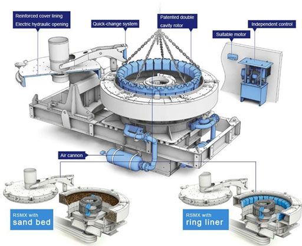
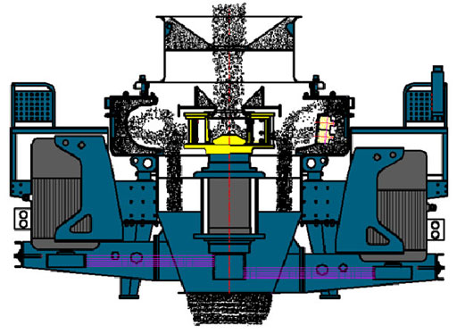

Compared with other types of sand making equipment, VSI sand making machine can be considered as one of the most advanced sand crusher nowadays. It employs high quality roller bearings, which can ensure the smooth running of main unit. VSI sand making machine will become your money-making machine in your sand making business.
VSI sand maker is our sole patent that using central feeding & central cascade feeding, which can be changed based on customers' needs. VSI sand making equipment takes high quality roller bearing, specially designed for stone shaping and artificial sand making process. Adopting German technology as well as innovating the manufacture craft, every index of VSI sand making machine has achieved to world's leading standard.
This series sand making machine incorporate three crushing types and it can be operated for 720 hours without any stop. Nowadays,our VSI sand making machine has taken the place of hammer crusher, roller crusher, ball mill, etc. In a word, the VSI sand making machine has become the mainstream quartz sand machine in the global mining industry.
Sand making machine is composed of electric motor, a transmission device, the spindle assembly, impeller, hopper, feeder, eddy broken cavity, a pedestal, a lubricating device and other components.
The transmission device: the motor double or single motor drive belt transmission mechanism, dual motor drive two motors were installed in the spindle assembly on both sides, two motor belt wheel by a transmission belt and a main shaft belt wheel is connected, on both sides of the spindle by the force balance, does not produce additional torque. The single motor drive shaft is driven by a single force and produces an additional torque, the general motor power in the 55KW above (a single motor power), recommended the use of double motor drive.
The spindle assembly: spindle assembly installed on the base, to motor is transmitted by V belt came to power and supporting the impeller rotation. The main shaft assembly is composed of a bearing seat, a shaft, and a bearing.
The impeller: the impeller structure is a hollow cylinder, mounted on the spindle assembly is arranged at the upper end of the shaft head, with tapered sets and key link transfer torque and rotating speed, the impeller is the key component of PL vertical impact crusher. Mineral material is part of the impeller feeder center into feed tube into the impeller center. The cloth by the impeller center cone material evenly assigned to each of impellers emission flow to, launching nozzle, install special material made of wear-resisting block, wear-resisting block wear can be replaced after impeller materials will accelerate to 70 ~ 100M / s velocity projectile out, impact to the vortex dynamic crushing cavity ore bed, strongly self shattering.
The feeding hopper: to the structure of the hopper is an inverted prismoid, feed port setting ring wear, from incoming the feeding device of the hopper into the crusher.
The distributor: distributor mounted in the vortex dynamic crushing cavity of the upper part of the, its role is will give hopper incoming stream, so that a portion of the material from the center feeding tube directly into the impeller is gradually accelerated to a high velocity projectile out, outside of a portion of the material from the center tube, bypass into the vortex dynamic crushing cavity of the impeller outside, have been isolated from the projection of the impeller material in high speed impact crushing, without increasing energy consumption, increase production capacity, improve crushing effect.
The vortex dynamic crushing cavity: vortex dynamic crushing cavity structure, two cylinder, wherein the annular space, cylinder of the upper and lower cover to open two holes, connected with the upper part of the cylinder, connected to the lower part of the discharge port.
Support: according to the working place of the crusher - open operation or indoor operation, the user can consider the configuration of the stent or not the stent.
Lubrication system: the use of molybdenum disulfide grease lubrication, lubrication for the spindle assembly upper bearing and a lower bearing, in order to facilitate the oiling, the machine oil the oil cup leads to the machine outside, with dry oil pump refuel regularly. A general understanding of the factors that affect the production capacity of the impact crusher.
In the production process of sand making machine, stone can be formed to protect the bottom layer, the material will not impact each other, not directly contact with the metal elements, but with the material lining layer, friction and grinding, reduce the wear of equipment and components.
Sand making machine can be based on the nature of the material or broken requirements for the material to be broken, and broken pieces of sand stone after the processing of equipment can become qualified stone, can be used directly as raw materials, without other equipment for the two time processing, to save the production cost of investment.
Sand making machine hammer with high wear resistance of high manganese steel, the impact resistance and toughness are very high. In addition, the frame is welding process with high, stable, work does not appear large amplitude vibration phenomenon, excellent equipment components and advanced.
The sealing element of the sand making machine not only adopts the water sealing part, the structure design is reasonable and compact, and the gap between the parts is reduced to prevent the dust from entering. At the same time, the inner flow of the material in the inner cavity of the machine can be eliminated by the ingenious air flow, and the dust pollution can be minimized.